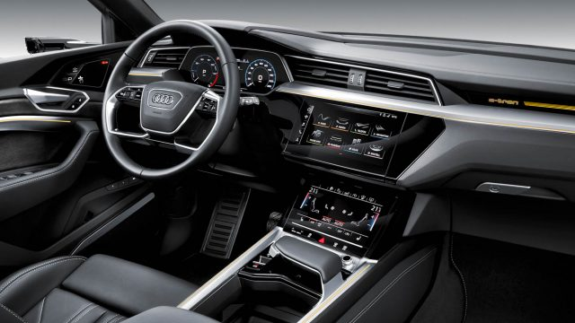

Audi presentó su primer vehículo eléctrico llamado E-Tron. Este modelo cuenta con dos motores eléctricos, puede alcanzar una velocidad de 200 km/h y cargar 800 kg. Una de las particularidades del nuevo automóvil es que sustituye los espejos laterales por cámaras que muestran las imágenes en una pantalla.
El precio del E-Tron oscila entre US$. El precio del E-Tron oscila entre US$ 75.000 y US$ 86.700.
Google integrará su sistema operativo Android en los automóviles producidos por Renault, Nissan y Mitsubishi, una medida que pondrá sus productos tecnológicos al alcance de millones de conductores.
La sociedad anunciada el martes permitirá a los fabricantes de automóviles instalar Mapas de Google, Google Play Store y Asistente de Google en vehículos a partir de 2021.
La posibilidad de que los productos de Google aparezcan en los automóviles produjo ondas de choque inmediatas. Las acciones de TomTom, una compañía holandesa que fabrica dispositivos de navegación, se desplomaron un 24% en Amsterdam.
Los fabricantes de automóviles dijeron en un comunicado que el acuerdo de Google les daría a los clientes "uno de los sistemas de infoentretenimiento más inteligentes del mercado" y una experiencia fluida a medida que entran y salen de sus vehículos.
Los fabricantes de automóviles habían sido cautelosos de trabajar con empresas tecnológicas en sistemas informáticos que ejecutan operaciones de navegación, entretenimiento y comunicación en sus vehículos, prefiriendo desarrollar los suyos propios.
La idea de que un taxi que pueda volar para evitar las congestiones de tránsito es tentadora. Son varias las empresas que trabajan en diseños y prototipos para desarrollar un vehículo que se adapte a ese fin. ¿Qué tan cerca estamos de que sea una realidad?
La compañía alemana Bosch presentó un servicio que predice la condición del terreno. El sistema pretende asistir a vehículos autónomos durante el recorrido, particularmente en caminos mojados o con hielo. Según la compañía, el servicio ayudará a evitar accidentes al advertir a los vehículos sobre los peligros en el camino.